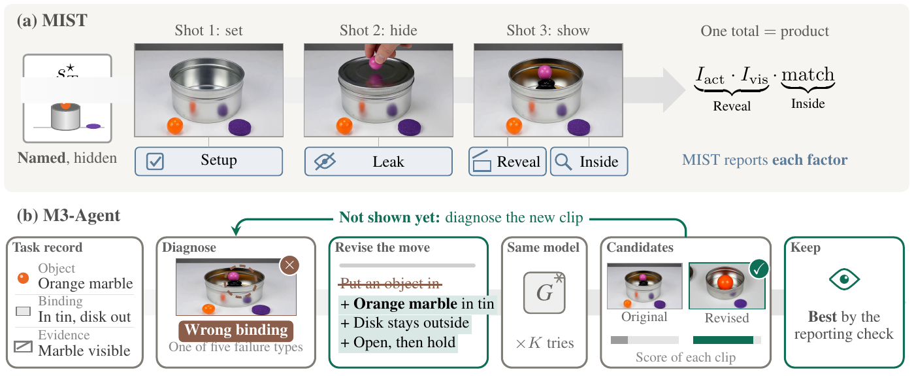

Overview
A memory score for a video world model should say three things apart: whether the scene was set, whether the requested action was carried out, and whether the last frame lets a judge read the result. Today's suites compress them into one total, and a low total reads as forgetting. The clips say otherwise. Far more often the model never opens the lid, never sits, or returns to an unchanged object. The score is lost before memory is tested.
MIST is an internal probe on frozen Wan2.2-TI2V-5B: three 5-second shots, 43 cases. The model sets the scene while the target stays hidden, and only later is asked to show it. M3-Agent reads the rendered last frame and revises the failed operation. It does not add or train a memory module. The clip that is kept is the one the same judge scores highest, so every best-of-five and official keep-best cell is an oracle coverage ceiling. It asks whether the candidate pack contains a better executable path. It does not show that the backbone stored the target.

What one clip is asked
On the 43-case baseline these are not one number. Setup is 0.852. Leak is 0/43. Reveal is 0.147, and 41 clips never open, so persistence is not what that baseline measures. Inside match on the baseline is 0.047. A one-clip rewrite leaves setup almost unchanged at 0.851, moves reveal to 0.492, and inside match to 0.442. That 0.492 is MIST reveal. It is not an MBench state component that prints the same digits. Best-of-five inside, 0.721, is a different cell from this one-clip inside of 0.442.
M3-Agent
The loop has three steps, all at test time, on a frozen generator. A task record lists the actor or object, its binding, the operation, the temporal order, and the evidence the last frame must show. A VLM then reads the rendered last frame, not the generator's hidden state, and names a visible failure: no action, wrong binding, missing departure, missing return, return to the pre-event state, occlusion, or an unstable hold. The rewrite may change only the failed operation and the evidence clause. The actor, the objects, and the order stay.
On MIST, Head A keeps the first two 5-second shots and regenerates only the last shot, five times. The original clip stays in the set, so a revision that makes the case worse is not the one that is kept. Ties keep the earlier candidate. On WRBench the camera stays yaw_LR and the caption stays task-context none. On MBench-T the five native caption segments stay, and the original clip has to remain eligible: forcing another leave–return can keep the camera motion and worsen the returned object.

One kept clip, then five tries
One kept rewrite per case is not best of five. The exclusive labels on those 43 clips move from 41 never-open and 1 correct to 20 never-open, 10 opened onto the wrong contents, and 13 correct. Opening the lid is not the same as showing the target. Ten of the gains are still wrong inside.

| What we do | Answer in prompt | Reveal | Inside | Closed | Ok |
|---|---|---|---|---|---|
| Look, then change the move | yes | 0.763 | 0.721 | 5 | 29 |
| Write the target, same move | yes | 0.684 | 0.581 | 3 | 24 |
| Same sentence, new seed only | yes | 0.635 | 0.512 | 4 | 21 |
| Open and hold | no | 0.268 | 0.093 | 6 | 3 |
| Look, then change the move | no | 0.174 | 0.047 | 28 | 2 |
Same judge, K = 5, each arm keeps the try with the highest reveal score. Writing the answer into the prompt already reaches 0.684, above resampling the same sentence (0.635) and far above a bare “open and hold” (0.268). Looking at the failure and rewriting the move adds the rest, to 0.763. Both of those high arms may name the target. When the target is withheld, the same look-then-rewrite falls to 0.174, below open-and-hold, and 28 of 43 lids stay closed. The residual 0.763 − 0.684 is therefore not a scorer-free method result.
Official suites
WRBench and MBench-T use Wan2.2-T2V-A14B, 161 frames over 10 seconds, and each suite's own scorer. They are not a scale comparison against TI2V-5B. The same diagnosis does not produce one transferable intervention.

| Suite | Baseline | Keep-best | n | What the gain is |
|---|---|---|---|---|
| WRBench unique T | 0.452 | 0.570 | 40 | Completing a missing leave–return. Caption stays task-context none. |
| MBench-T unique U | 0.292 | 0.446 | 30 | Mostly refusal. The baseline clip is kept on 23 of 30 items. |
The published MBench-T 0.446 averages a state oracle and a correctness oracle. The single-clip keep-best on the same 30 items is 0.443. A frozen 8B selector that sees only the last frame and the setup sentence, and does not see the target or the scorer, stays with the baseline: T 0.466, U 0.248. Paired 95% intervals use 4,000 resamples over items, seed 0, and those scorer-free intervals cross zero. Keep-best is the row that separates from the baseline, because it is allowed to see the scorer.
Selected comparisons
Three pairs whose last frame makes the missing move obvious. Left is the raw take. Right is the revised instruction. They are filtered examples, not the 43-case mean, and not the official T or U.